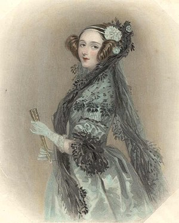

Ko je prvi programer na svetu?

Ada Lovelace
Ejda Bajron, grofica od Lavlejsa, (često se u literaturi navodi i kao Ada, engl.
Lady Ada Augusta Byron, Countess of Lovelace; 10. decembar 1815.-27. novembar 1852.) rođena je kao ćerka engleskog pesnika lorda Bajrona i Anabele Milbank.
Bavila se matematikom i zainteresovala se za projekat analitičke mašine.
Pomagala je u dokumentovanju rada ove mašine kao i u radu na njoj - i finansijski i svojim predlozima, od kojih je najznačajniji bio prenos kontrole i rad sa ciklusima, tako da naredbe programa ne bi morale da se izvršavaju redosledom kojim su date već u zavisnosti od toka programa.
Predviđala je i mogućnost ove mašine i za opštije stvari (komponovanje muzike, grafiku) ali i za šire naučne primene. Predložila je da se pomoću analitičke mašine izračunaju Bernulijevi brojevi.
Ovaj plan se ujedno smatra i prvim programom, a Ejda Lavlejs prvim programerom. U njenu čast jedan programski jezik dobio je njeno ime.
Biografija
Ejda Bajron je jedna od najzanimljivijih i najslikovitijih ličnosti u istoriji informatike.
Ogasta Ejda Bajron je rođena 10. decembra 1815. u Londonu.
Bila je ćerka britanskog pesnika lorda Bajrona i En Izabel Milbank, tj. ledi Bajron.
Kada je imala pet meseci njeni roditelji su se razveli. U aprilu 1816, lord Bajron je otišao u inostranstvo, gde je i umro.
Iako Ejda nije stigla da upozna svog oca, ona mu je bila veoma slična kao po izgledu tako i po naravi.
NJena majka nije želela da joj ćerka postanje pesnikinja pa se potrudila da sve uradi kako se to ne bi desilo.
Ledi Bajron se interesovala za matematiku i nauku, i potrudila se da Ejdino obrazovanje bude u skladu sa njenim interesovanjima.
Ejda je učila matematiku, zapostavljajući oblasti iz očeve struke: poeziju i književnost.
Još kao mlada, pokazala je izvesne matematičke sposobnosti i njena majka je to zdušno podržavala.
Imala je dosta tutora koji su usmeravali njeno znanje. Sa šest godina ju je podučavala gospođica Lamont, no kada je njena majka saznala da Ejda više voli geografiju od aritmetike, gospođica Lamont je zamenjena novim tutorom.
Ser Vilijam Frend i dr Vilijam King su je dalje podučavali. Sa trinaest godina se razbolela od misteriozne bolesti i nije mogla da hoda tri godine. Za to vreme nastavila je da uči, i ubrzo je nadmašila očekivanja u matematici, a postala je i odličan lingvista i muzičar.
Osoba koju je Ejda veoma želela da upozna je bila Meri Somervil, koja je bila prva žena član Kraljevskog astronomskog društva (engl. Royal Astronomical Society) i priznati matematičar.
Gospođa Somervil je bila osoba na koju se Ejda ugledala, pa joj je mnogo značilo kada su se njih dve sprijateljile. Upravo je gospođa Somervil upoznala Ejdu sa njenim budućim mužem, lordom Vilijamom Kingom. Na jednoj od zabava koje je priređivala Meri Somervil, Ejda je, sa osamnaest godina, upoznala Čarlsa Babidža, veoma poštovanog profesora matematike.
Duboko su je impresionirale Čarlsove ideje o novoj mašini za računanje, takozvanoj analitičkoj mašini, a i on sam je ostao zapanjen Ejdinom inteligencijom. On se zanosio sledećim idejama: „Šta kada bi mašina za računanje, ne samo predviđala nego i funkcionisala na tom predviđanju?“ Bila je zadivljena univerzalnošću njegovih ideja, i činilo se kao da ih razume bolje nego on sam.
Da saznas vise o algoritmu-Idi na trecu stranicu